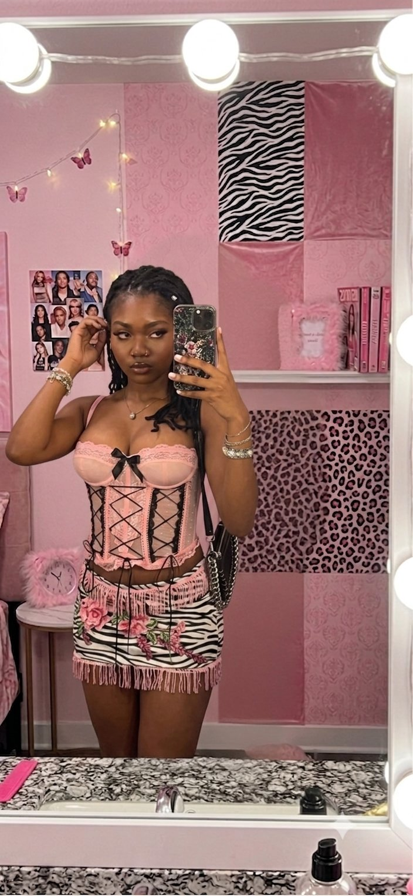
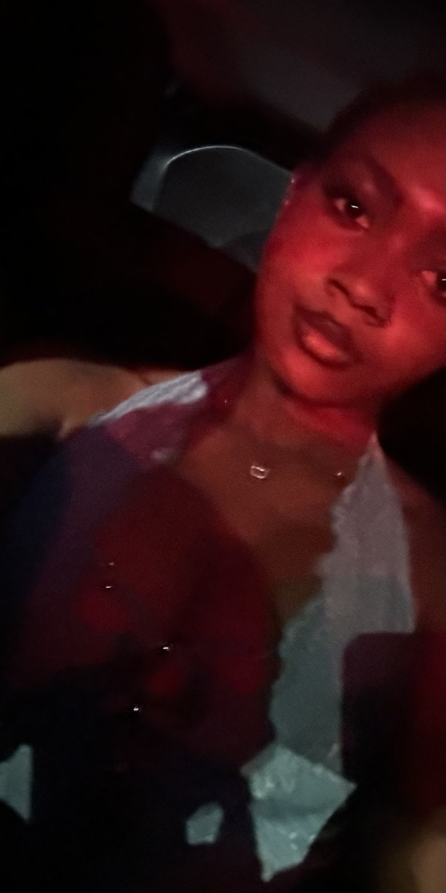
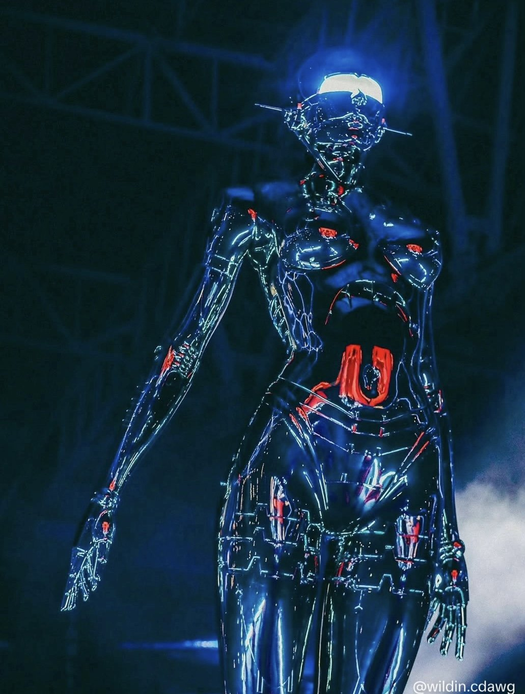

the archive
Pictures from here and there
Film and digital — some of my most recent forms .




the sky right now
What the planets are doing this week — and what it means for you.
Pluto has been moving through Aquarius since November 2024 — a nearly two-decade transit reshaping how power flows through technology, community, and the stories we tell about progress. Now in retrograde until October 15, that transformation turns inward. This isn't external chaos — it's an underground current pulling old fears, control patterns, and inherited narratives up to the surface to finally be examined. Where have you abandoned your own knowing to stay acceptable? Where have you given your power to a screen, a crowd, or a version of yourself built to survive belonging? This retrograde doesn't ask you to have answers. It asks you to stop pretending the questions don't exist.
Neptune stations retrograde today at 4° Aries and won't turn direct again until December 12. Neptune is the planet of dreams, illusion, and soft-focus longing — when it's direct, everything gets a hazy, romantic glow. Retrograde, that spell lifts. You start seeing situations, people, and yourself as they actually are instead of how you wished they were. It can feel disillusioning at first, but it's really an invitation to check your visions against reality and keep only what's genuinely yours. To stay grounded through it: get back in your body before you get back in your head — movement, food, sleep, the boring maintenance stuff. Notice where you've been romanticizing a person, a project, or a version of yourself, and ask what's true underneath the glow. Keep a small ritual or routine that has nothing to do with escaping — journaling, a walk, time with people who see you clearly. Neptune retrograde isn't punishing you. It's clearing the fog so what you build next is real, not just beautiful.
The mind turns inward and emotional. Mercury in Cancer softens how we speak and listen — communication becomes more intuitive, more feeling-based, less linear. Writing, journaling, and heart-to-heart conversations all flow more easily right now. Heads up: Mercury goes retrograde on June 29 in Cancer. Back up your files, slow down on big decisions, and revisit old creative projects that deserve a second look.
Saturn stations retrograde on July 26 in Aries and won't turn direct again until December 10th. Saturn is all about structure, discipline, boundaries, and the long game; astrologers actually consider it the one planet that gets stronger, not weaker, in retrograde, because all that Saturnian rigor turns inward instead of outward. In Aries specifically, the audit is personal: courage, self-assertion, and where you've either over-committed to things nobody actually asked you to carry, or quietly avoided a responsibility you keep circling instead of facing. To work with it instead of white-knuckling through it: don't launch anything huge during this window instead, use it to refine and reinforce what you've already built instead. When you hit friction or delay, treat it as information, not punishment; ask what it's actually asking you to fix. Get concrete about your boundaries in writing if you have to, Saturn responds to structure, not vibes (unfortunately) Lastly, give yourself real credit for the boring, unglamorous effort, because that's exactly what this transit rewards once it lifts.
draw a card
One card, drawn fresh for today. Same card for everyone who visits — the sky doesn't reset just for you.
this week
A weekly reflection — thoughts, feelings, existential crisis.. things worth writing down.
Welcome to Berry’s little Dreamland in Mercuri’s orbit! So nice to have you readers here. Today I feel most especially like an alchemist. I’m not sure if it’s the astrological changes that just took place (Jupiter in Leo, Mercury RX, Uranus-Mars in Gemini, etc.) or what, but I am feeling electrically charged and ready for whatever is coming next. Human beings are, as we all know, electrically powered creatures.
Lately, my own internal wiring has been undergoing a massive, high-voltage overhaul. Transmuting heavy energy into something beautiful is the core work of an alchemist, but let’s be real, the process itself is messy. Stepping through rapid life changes feels a lot like navigating a neon-lit, noir landscape: mysterious, slightly chaotic, slightly dangerous, and filled with shadows of old habits I’m forced to leave behind. It hasn’t been easy to keep my footing while the cosmic floor shifts, yet instead of panicking, I’ve found myself wrapped in a weird, unshakeable sense of peace. (GOD DID)
When you’re floating out here in the creative stratosphere, you realize that true transformation requires you to be both the scientist and the subject. Lately, my studio time has felt less like songwriting and more like capturing lightning in a bottle. Every lyric I draft, every visual I conceptualize, and every conversation I log feels hyper-stimulated by this new cosmic frequency. It’s like the universe handed us a blank canvas, painted it with starlight, and told us to start screaming our truths into the microphone.
There’s a strange, magnetic pull that happens when you decide to fully align with your future self. You start shedding the people, the places, and the versions of you that were only meant to be temporary chapters. Out here in the quiet spaces between who I was and who I am becoming, I’m learning that the static of the unknown isn’t white noise, it's a brand-new soundtrack waiting to be arranged. It’s the sound of stepping into a higher vibration, where modern love, futuristic dreaming, and deep, soulful alignment finally get to take center stage.
So, to anyone else currently watching their old foundations dissolve into stardust: let it happen. The universe isn't trying to break you down; it's trying to upgrade your entire operating system so you can handle the blessings that are about to drop. We are building empires out of our wildest imaginations right now, and the coordinates are locked in.
It is a strange thing to feel entirely grounded while your world is being reconfigured. I’ve realized that staying positive doesn’t mean ignoring the dark but trusting that the current friction is just a necessary spark to light up what’s next for me. As the shadows stretch, I’m choosing to lean into the mystery, holding onto my inner stillness like a heart compass. We are all walking alchemists (good and bad), and right now, I'm just enjoying the beautiful, unpredictable art of turning my raw seeds into diamonds.
stories & poems
Short stories, poems, and ongoing adventures — updated as the words come aka when I feel like it.
Seven friends, one band, and a magical lake that changes everything. A story about music, belonging, and what happens when fame finds you in the most unexpected way.
read all chapters → ✦ poemA quiet unraveling.
read the poem → ✦ short storyA new story, fresh from the notebook.
read the story →listening
Original songs — more coming from the studio soon.
✦ prod. by seventhwinterx ✦
the archive
Film and digital — some of my most recent forms .



learn
Interested in learning more about astrology and understanding wth I'm talking about? Here's Berry's own personal favorite site to use. Astromatrix breaks everything down and easy to digest. Give it a shot :)
about
I'm Berry Dreamland — intergalactic being, poetic words assembler, melodic sounds creator, magical web developer (recent), and collector of beautiful moments. This is the space where all of it lives: the stories I can't stop writing, the songs taking shape, and the pictures that felt worth keeping.
Welcome to the dreamland. Stay a while.
leave a mark
Leave your own random thought — I read every one. This opens your email app addressed to me, nothing gets posted automatically.